Obs.: Seções em verde são obrigatórias, em azul são opcionais
Obs.2: Essa página é grande porque tem uma imagem pra cada passo pra não deixar dúvidas
1. Instalando Ryujinx
Preferencialmente em um SSD e definitivamente fora de Arquivos de Programas

1.2. Abra o Ryujinx em Ryujinx LDN/Ryujinx.exe
Caso apareça um popup perguntando se quer usar Vulkan, clique Yes (Vulkan)
2.1. Com o Ryujinx aberto, vá em Options > Settings > Input
2.2. Clique em Configure no Player 1

2.3. Em Input Device selecione seu controle e em Controller Type: selecione Pro Controller
O Ryunjinx tem suporte pra DualSense sem precisar do DS4Windows e o Pro Controller sem precisar da Steam

2.4. Configure os inputs do jeito que preferir
Lembre-se de habilitar o Rumble

3.1. Vá em Options > Manage User Profiles

3.2. Clique em Add New Profile
Precisa criar um novo perfil; se só renomear o padrão, vai dar conflito ao jogar online

3.3. Coloque seu nome
Definitivamente o verdadeiro Ian Chamon

3.4. Escolha uma imagem do seu PC ou uma do Switch
Eu honestamente não faço ideia onde essas imagens aparecem

3.5. Clique 2 vezes no seu perfil para ativá-lo

4.1. Vá em Options > Settings

4.2. Em Game Directiores, clique Add
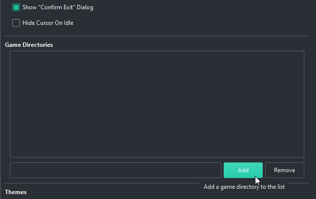
4.3. Escolha a pasta ROM que foi extraída em 1.1.
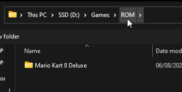
4.4. Após salvar e fechar, os jogos irão aparecer no Ryujinx
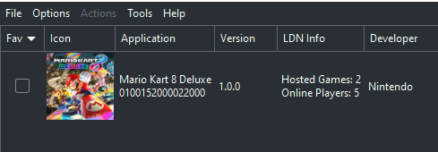
5.1. Na tela principal do Ryujinx, clique com o botão direito no Mario Kart 8 e selecione Manage Title Updates
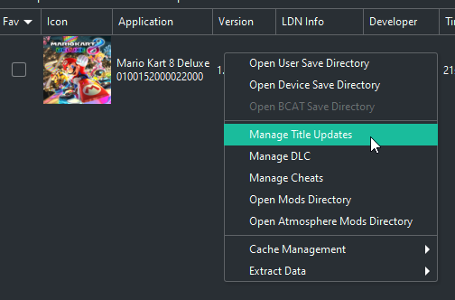
5.2. Clique em Add
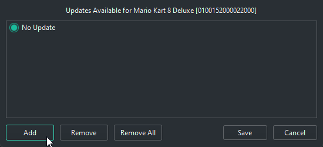
5.3. Selecione o update Mario Kart 8 Deluxe [0100152000022800][v786432] (1.19 GB).nsp
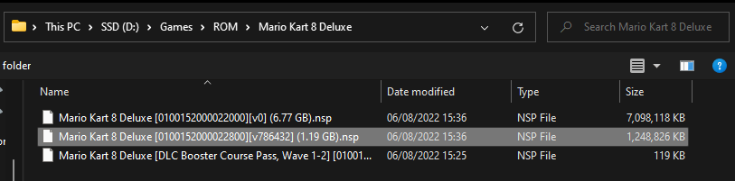
5.4. Clique em Save
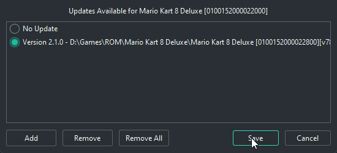
5.5. É hora de arquitetar a delícia. Botão direito no Mario Kart 8 e selecione Manage DLC

5.6. Clique em Add
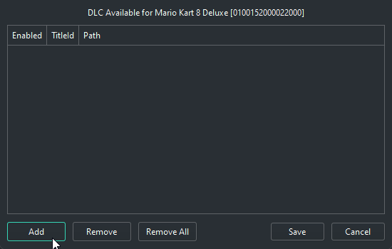
5.7. Selecione a delícia Mario Kart 8 Deluxe [DLC Booster Course Pass, Wave 1-2]...
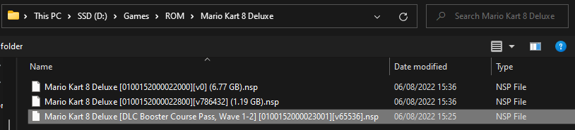
5.8. Clique em Save
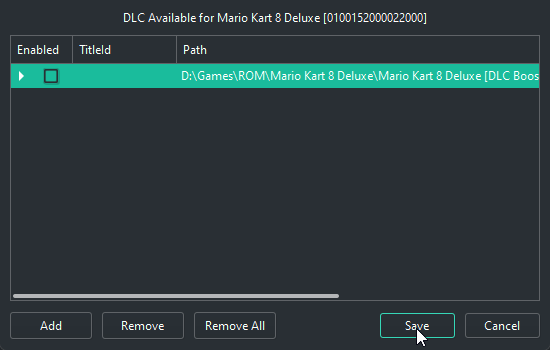
De smart isso tem nada
6.1. Entre no jogo
A primeira vez vai demorar, tá compilando os shaders e o progresso está no canto inferior direito
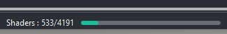
6.2. Selecione um Mii
Se tentar criar um Mii vai travar e fechar o Ryujinx; Da pra usar o mouse (Switch é touch)
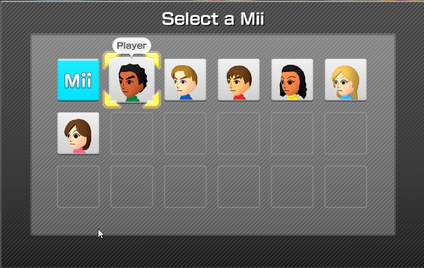
6.3 Vá numa corrida/categoria qualquer para poder escolher um kart
Single Player > Grand Prix > 50cc é o caminho mais rápido
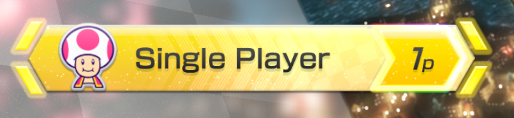
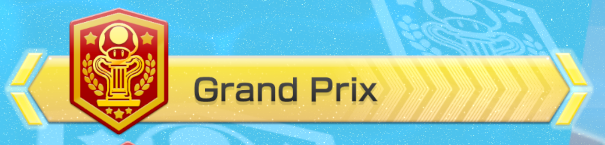
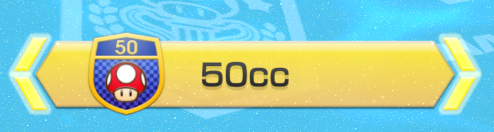
6.4. Selecione um personagem qualquer e aperte Start (- ou + no Switch) para mostrar os status
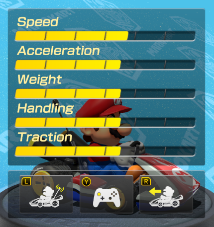
6.5. Aperte L e R (LB/L1, RB/R1) para desabilitar as funções Smart
Estarão desabilitadas se estiverem de acordo com a imagem abaixo
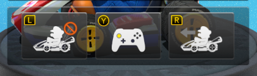
6.6. Aperte A (OK) só pra garantir que salvou, e volte pro menu principal
Ou pare a emulação/feche o Ryujinx
7.1. É quase tempo. No menu do Ryujinx, vá em Options > Settings
7.2. Vá na aba Multiplayer e em Network Passphrase: coloque Ryujinx-158d4dae
Salve e feche a janela depois
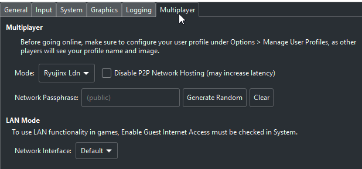
7.3. Para jogar com os coleguinhas, vá em Wireless Play
Se quiser jogar com mais alguém no seu PC, selecione Wireless Play 2p e configure um segundo controle como em 2. Configurando Controles
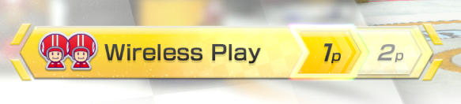
Esse save tem todos os karts e peças liberadas
8.1. Botão direito no Mario Kart 8 e clique em Open User Save Directory
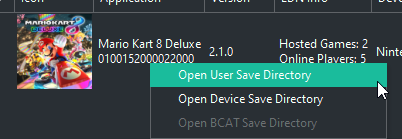
8.2. No pacote que baixou o MK8 + Ryujinx, tem um Save_completo.zip, extraia o conteúdo desse zip pra pasta dos saves e substitua o que pedir
A imagem em 1.1. mostra esse .zip
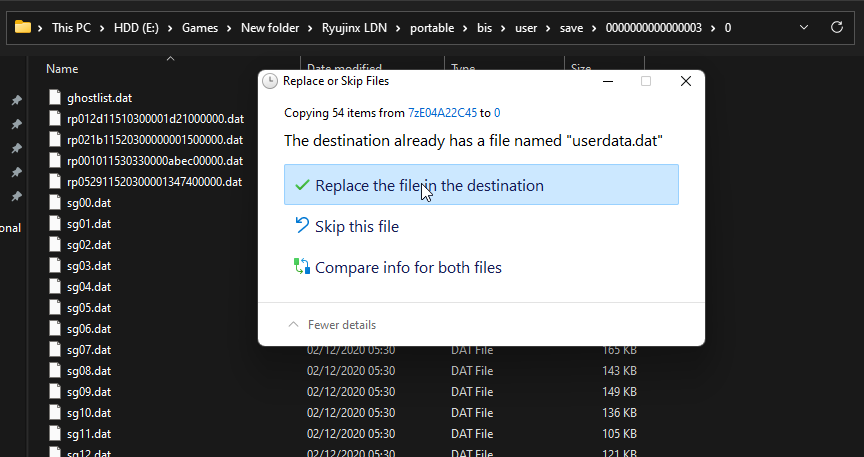
8.3. Faça o processo 6.3. Desabilitando Smart Steer e Acceleration novamente
Caso em algum momento precise baixar mais shaders, ou baixá-los novamente, ou para outro jogo
9.1. Dentro da pasta Ryujinx LDN, há uma pasta Ryusak. Abra o RyuSAK.exe
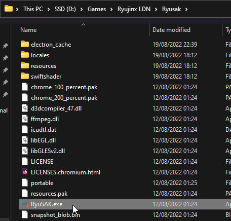
9.2. Em Configuration, selecione Add portable configuration
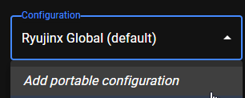
Selecione o Ryujinx.exe
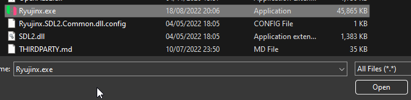
9.3. Selecione o jogo
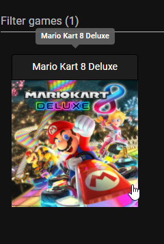
9.4. Clique em DOWNLOAD SHADERS
Se o seu Local shader count for maior que o RyuSAK shader count, não há necessidade de baixar os shaders
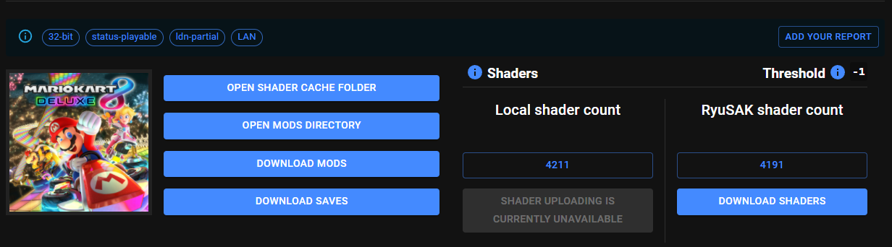
- Certifique que não tem nada drenando os recursos do seu PC
- Em hipótese alguma desabilite o VSync nas configurações do Ryujinx
- Tente rodar em handheld clicando no botão Docked no canto inferior esquerdo